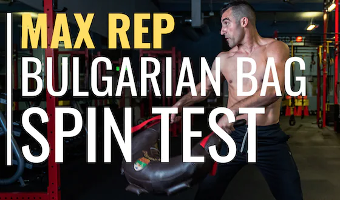

B284 · 308 MAX REP Bulgarian Bag SPINS! (This was SO damn hard!)
Hi {first_name},
Yesterday morning I received a direct email from Coach Ivan Ivanov, the inventor of the Suples Bulgarian Bag and key mentor of mine, inviting me to test myself in a max (to the limit!) set of Bulgarian Bag Spins.
At first, I thought I should train for this and give myself a few weeks to prepare.
But, then I said to myself, "screw it, let's go right now!" ; )
I've not tested myself with the Bag in over a year, and training has been pretty erratic lately, so I was very doubtful I could surpass his BEASTLY 249 rep count.
While going for it, I completely lost count but kept going past the point of wanting to quit.
It was a very special moment, as I have not dug that deep for a while, and I remembered during and after the set just how much I missed the feeling of pushing myself beyond my limits and seeing what I had in me.

I ended up performing 308 reps, and while at the end, they were NOT pretty reps; however, I gained a new level of self-respect for myself because when it got hard (and it got hard early in the set), I did not quit. THAT is what's most important. That is why it's called a test.
I learned that I have MUCH more in me than I thought, and I was so proud of myself.
I remembered the lessons that I've learned multiple times in my life when competing in Powerlifting and Kettlebell Sport.
Our minds can go way further than our physical bodies.
Now, I sit here writing you this email to hopefully inspire a thought and feeling, that you too have more in you than you think.
When you want to quit, just keep telling yourself it will be ok. Tell yourself to simply breathe and move, breathe, and move.
I invite you to join me in this simple, fun, and challenging test.
You CAN do it. I believe in you, but that honestly doesn't' really matter much. Because what's most important is that YOU believe in YOU.
Click here to watch the full video of my max effort (nearly dying at the end haha) of this set.
The rules are as follows:
If you do it, please post and tag me as well as @Suples.Training.Systems so we can celebrate your effort with you.
I LOVE friendly competition and believe it can truly help us all grow and rise together in a healthy way.
If you need a Bag to get started, here is a discount code you can use (TEAMSALEMI10) when you go to my site if you live in the US: www.mikesalemi.io.
I had over 150 people take a wild guess at how many reps I could perform - 83% thought I could do more than 249, and 17% thought I could not.
Again, what people think doesn't really matter. What does, however, is how much we believe in ourselves and our potential.
I have also been getting a good handful of DMs from people in the last 24 hours curious about the benefits of this beautiful, total body movement. So what I will do is in the coming days share about exactly how amazing this movement is and what it's helping you to develop as a more functional athlete and person
In my opinion, we ALL are athletes in some capacity, shape, or form, whether we compete in a sport or not.
Also, all have something of value to teach one another, and this test will show you that - I can guarantee you.
When one of us grows and finds deeper meaning into who we are, we all grow together as a community.
With light, strength, love, and spins ; ) Mike |